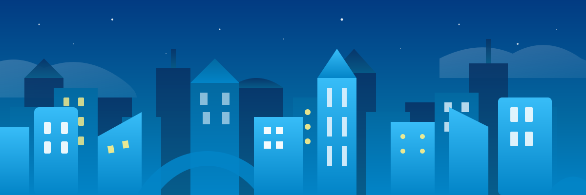

Login Berhasil!
Koneksi internet Anda sudah aktif. Silakan klik tombol di bawah untuk melihat status jaringan dan sisa kuota Anda.

Koneksi internet Anda sudah aktif. Silakan klik tombol di bawah untuk melihat status jaringan dan sisa kuota Anda.